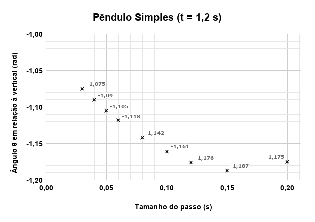

Método de Euler Aplicado ao Movimento do Pêndulo
Após modelagem do problema do pêndulo, obtemos a seguinte equação diferencial ordinária de segunda ordem:
\[\frac{d^2\theta}{dt^2} = - \frac{g}{R} \cdot \text{sen}(\theta)\]
O método de Euler é um método numérico simples para resolver equações diferenciais ordinárias (EDOs) de valor inicial. Ele é baseado na ideia de usar a inclinação da função no ponto atual para estimar o valor da função no próximo ponto. No entanto, ela foi desenvolvida para resolver EDOs de primeira ordem. Para resolver uma EDO de segunda ordem, como a do pêndulo, precisamos primeiro reescrevê-la como um sistema de EDOs de primeira ordem.
Podemos definir uma nova variável \( \omega = \frac{d\theta}{dt} \), que representa a velocidade angular do pêndulo. Assim, podemos reescrever a equação original como um sistema de duas EDOs de primeira ordem:
\[\begin{cases} \frac{d\theta}{dt} = \omega \\ \frac{d\omega}{dt} = - \frac{g}{R} \cdot \text{sen}(\theta) \end{cases}\]
Vamos resolver esse sistema usando o método de Euler. Para isso, precisamos discretizar o tempo em passos de tamanho \(h\) e usar as seguintes fórmulas de atualização:
\[\begin{cases} \theta_{n+1} = \theta_n + h \cdot \omega_n \\ \omega_{n+1} = \omega_n + h \cdot \left(- \frac{g}{R} \cdot \text{sen}(\theta_n)\right) \end{cases}\]
Essas fórmulas nos permitem calcular a posição angular \( \theta \) e a velocidade angular \( \omega \) do pêndulo em cada passo de tempo, a partir dos valores iniciais \( \theta_0 \) e \( \omega_0 \). Vamos considerar que o pêndulo é solto a partir de uma posição angular inicial \( \theta_0 = \frac{\pi}{2} \) e com velocidade angular inicial \( \omega_0 = 0 \). Além disso, vamos escolher um passo de tempo \( h = 0.25 \) segundos e calcular a evolução do sistema ao longo de 1 segundo. Assim, vamos precisar de 4 passos no tempo.
A seguir, apresentamos os cálculos para cada passo de tempo, considerando \( g = 9.81 \, m/s^2 \) e \( R = 2 \, m \)
Primeiro Passo:
\[ \begin{cases} \theta_1 = \theta_0 + h \cdot \omega_0 \\ \quad = \frac{\pi}{2} + 0.25 \cdot 0 \\ \quad = \frac{\pi}{2} \, \text{rad} \\[10pt] \omega_1 = \omega_0 + h \cdot \left(- \frac{g}{R} \cdot \text{sen}(\theta_0)\right) \\ \quad = 0 + 0.25 \cdot \left(- \frac{9.81}{2} \cdot \text{sen}\left(\frac{\pi}{2}\right)\right) \\ \quad = -1.2263 \, \text{rad/s} \end{cases} \]
Segundo Passo:
\[ \begin{cases} \theta_2 = \theta_1 + h \cdot \omega_1 \\ \quad = \frac{\pi}{2} + 0.25 \cdot (-1.2263) \\ \quad = 1.2642 \, \text{rad} \\[10pt] \omega_2 = \omega_1 + h \cdot \left(- \frac{g}{R} \cdot \text{sen}(\theta_1)\right) \\ \quad = -1.2263 + 0.25 \cdot \left(- \frac{9.81}{2} \cdot \text{sen}\left(\frac{\pi}{2}\right)\right) \\ \quad = -2.4525 \, \text{rad/s} \end{cases} \]
Terceiro Passo:
\[ \begin{cases} \theta_3 = \theta_2 + h \cdot \omega_2 \\ \quad = 1.2642 + 0.25 \cdot (-2.4525) \\ \quad = 0.6511 \, \text{rad} \\[10pt] \omega_3 = \omega_2 + h \cdot \left(- \frac{g}{R} \cdot \text{sen}(\theta_2)\right) \\ \quad = -2.4525 + 0.25 \cdot \left(- \frac{9.81}{2} \cdot \text{sen}(1.2642)\right) \\ \quad = -3.6216 \, \text{rad/s} \end{cases} \]
Quarto Passo:
\[ \begin{cases} \theta_4 = \theta_3 + h \cdot \omega_3 \\ \quad = 0.6511 + 0.25 \cdot (-3.6216) \\ \quad = -0.2543 \, \text{rad} \\[10pt] \omega_4 = \omega_3 + h \cdot \left(- \frac{g}{R} \cdot \text{sen}(\theta_3)\right) \\ \quad = -3.6216 + 0.25 \cdot \left(- \frac{9.81}{2} \cdot \text{sen}(0.6511)\right) \\ \quad = -4.3648 \, \text{rad/s} \end{cases} \]
O applet do GeoGebra abaixo apresenta a aplicação do método de Euler explícito com 45 passos na resolução da equação do pêndulo, considerando as mesmas condições iniciais descritas anteriormente. Para reproduzir os resultados discutidos, basta configurar o passo de tempo para \(0{,}25\) segundos, mantendo o raio, a aceleração da gravidade e o ângulo inicial com seus valores padrão.
Embora o método de Euler seja simples e de fácil implementação, ele pode apresentar erros significativos, especialmente em sistemas não lineares como o pêndulo. Trata-se de um método de primeira ordem, no qual o erro global é proporcional ao passo de tempo \(h\), enquanto o erro local de truncamento em cada passo é proporcional a \( h^2 \). Como consequência, obter maior precisão exige a utilização de passos menores, o que aumenta o custo computacional.
Como a equação do pêndulo não possui solução analítica em forma fechada, não é possível realizar uma comparação direta com a solução exata. Ainda assim, é possível analisar os efeitos dos erros de truncamento e comparar os resultados com métodos numéricos mais precisos, como os métodos de Runge-Kutta.
Observa-se que a amplitude das oscilações cresce ao longo do tempo, ultrapassando o valor inicial de \(\frac{\pi}{2}\). Esse comportamento é fisicamente inconsistente, pois o pêndulo foi solto dessa posição com velocidade inicial nula, o que define sua energia mecânica total. Assim, atingir ângulos maiores implicaria um aumento não físico da energia do sistema. Esse efeito ocorre porque o método de Euler utiliza uma aproximação linear baseada na inclinação no ponto atual, o que é inadequado para sistemas não lineares, nos quais a taxa de variação muda significativamente ao longo do tempo. Como resultado, os erros são propagados e amplificados a cada iteração, levando a desvios progressivamente maiores em relação à dinâmica real do sistema.
Também é possível analisar o comportamento da solução em um instante específico. Neste caso, considera-se o tempo \(t = 1{,}2\) segundos, que pode ser alcançado por diferentes escolhas de passo de tempo. Isso permite comparar diretamente os valores aproximados obtidos em um mesmo ponto, evidenciando a influência do tamanho do passo na precisão da solução.
O gráfico a seguir apresenta os valores de \(\theta\) nesse instante para diferentes valores de \(h\), permitindo identificar a tendência de convergência do método à medida que o passo é reduzido.

A partir dos dados apresentados, observa-se que, à medida que o passo de tempo é reduzido, os valores aproximados tendem a se estabilizar, indicando convergência da solução numérica. Além disso, nota-se que a variação entre aproximações sucessivas diminui de forma aproximadamente proporcional ao tamanho do passo.
Esse comportamento é consistente com a teoria, que estabelece que o método de Euler possui ordem de convergência igual a 1. Isso significa que o erro global é proporcional a \(h\), de modo que, para passos pequenos, reduzir o passo pela metade tende a reduzir o erro aproximadamente pela metade. Assim, o gráfico confirma experimentalmente a taxa de convergência esperada para o método.